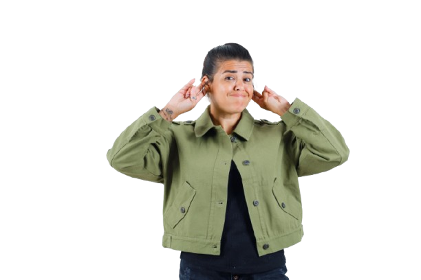

SIBILANG
Halo, Selamat Datang
Menghubungkan Isyarat, Menyatukan Makna
Kami hadir untuk menjadikan komunikasi lebih inklusif dan bermakna!
Try it now!

Menurut data Kementerian Sosial tahun 2021, dari
total 30,38 juta penyandang disabilitas di Indonesia,
sekitar 2.135.714 orang atau 7,03 persen di antaranya
merupakan penyandang disabilitas tuli, menyoroti
pentingnya perhatian terhadap
kebutuhan komunitas ini.
total 30,38 juta penyandang disabilitas di Indonesia,
sekitar 2.135.714 orang atau 7,03 persen di antaranya
merupakan penyandang disabilitas tuli, menyoroti
pentingnya perhatian terhadap
kebutuhan komunitas ini.